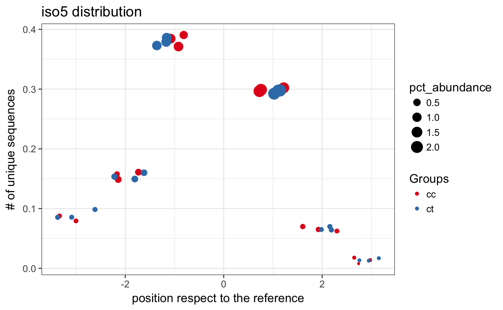

This function plot different isomiRs proportion for each sample. It can show trimming events at both side, additions and nucleotides changes.
isoPlot(ids, type = "iso5", column = NULL, use = NULL, nts = FALSE)
| ids | Object of class IsomirDataSeq. |
|---|---|
| type | String (iso5, iso3, add, snv, all) to indicate what isomiRs to use for the plot. See details for explanation. |
| column | String indicating the column in
|
| use | Character vector to only use these isomiRs for the plot. The id used is the rownames that comes from using isoCounts with all the arguments on TRUE. |
| nts | Boolean to indicate whether plot positions of nucleotides changes when showing single nucleotides variants. |
ggplot2::ggplot() Object showing different isomiRs changes at
different positions.
There are four different values for type parameter. To plot
trimming at 5' or 3' end, use type="iso5" or type="iso3". Get a summary of all using type="all".
In this case, it will plot 3 positions at both side of the reference
position described at miRBase site. Each position refers to the % of
sequences that start/end before or after the miRBase reference. The
color indicates the sample group. The size of the point is proportional
to the abundance considering the total as all the sequences in the sample.
The position at y is the % of
different sequences considering the total as all sequences with changes
for the specific
isomiR showed.
Same logic applies to type="add" and type="subs". However,
when type="add", the plot will refer to addition events from the
3' end of the reference position. Note that this additions don't match
to the precursor sequence, they are non-template additions.
In this case, only 3 positions after the 3' end
will appear in the plot. When type="subs", it will appear one
position for each nucleotide in the reference miRNA. Points
will indicate isomiRs with nucleotide changes at the given position.
When type="all" a colar coordinate map will show
the abundance of each isomiR type in a single plot.
Note the position is relatively to the
sequence not the miRNA.
#>#>